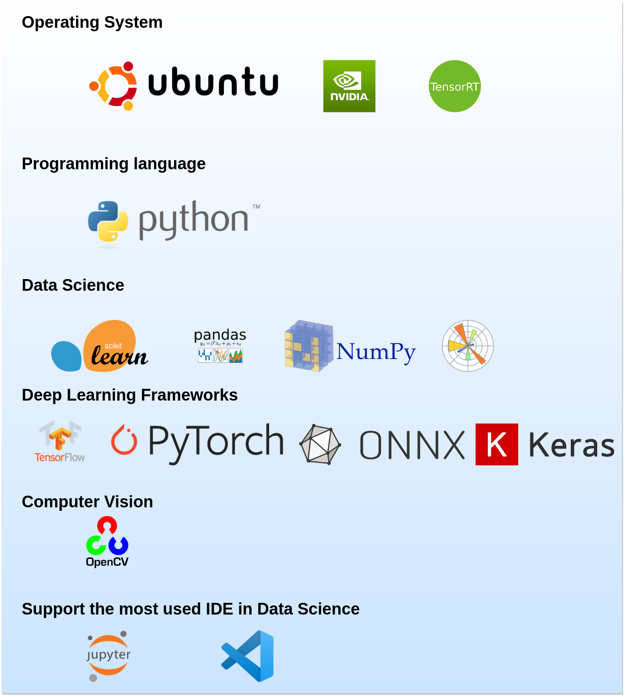
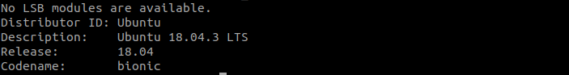
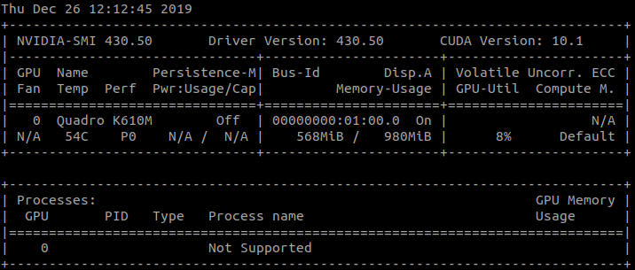
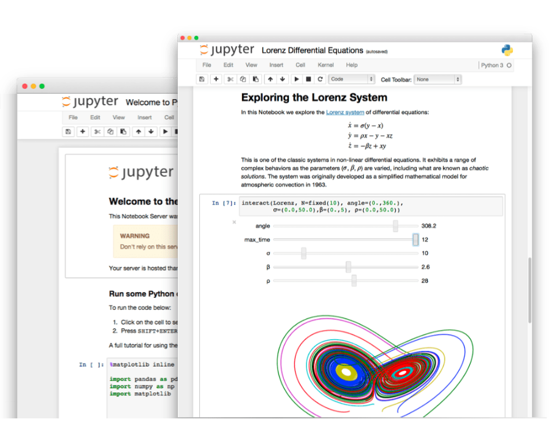
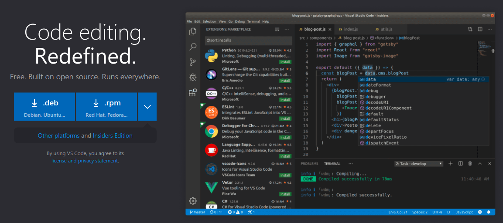
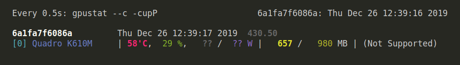
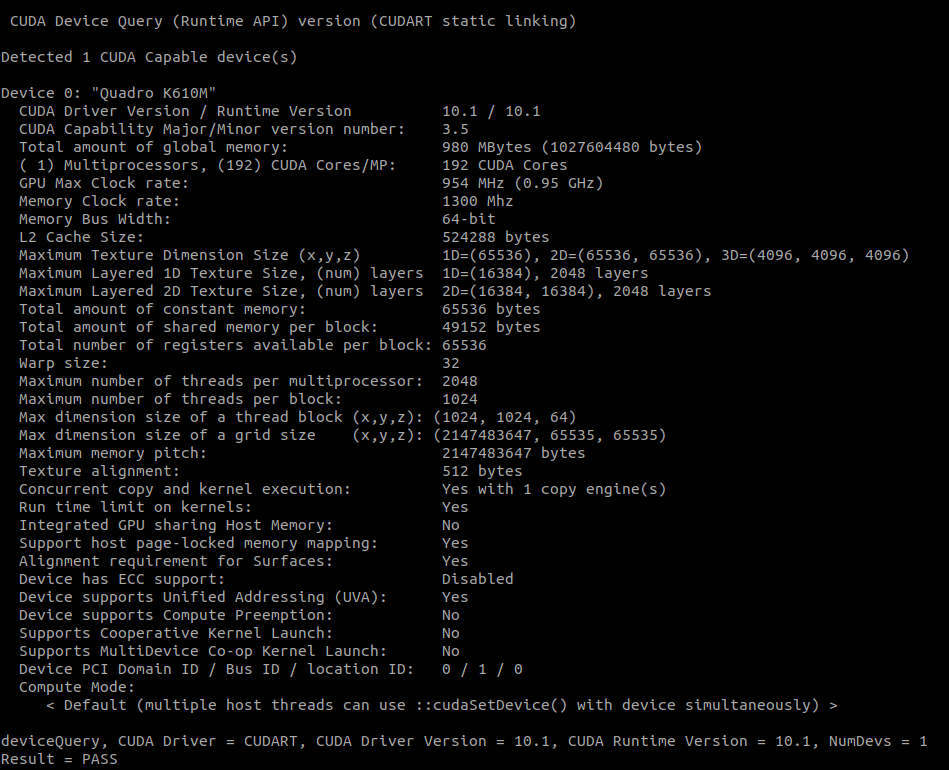

AI-lab

1.1. Description
This project is for creating a development environment for data scientist. It helps the users developing machine learning models in a simple way,
- Focus on code not on the tool.
- Saving time that could be wasted during installing.
- Prevent broking the OS by installing incompatible packages.
I hand-crafted AI-lab (on top of NVIDIA Container) and took advantage of Docker capabilities to have a reproducible and portable development environment.
AI-lab allows developing artificial intelligence (AI) based application in Python using the most common artificial intelligence frameworks. AI-lab is meant to be used to building, training, validating, testing your deep learning models, for instance is a a good tool to do transfer learning.
It includes
- Ubuntu 18.04
- NVIDIA CUDA 10.1
- NVIDIA cuDNN 7.6.0
- OpenCV 4.1.0
- Python 3.6
- Most common AI framework:
- TensorFlow, PyTorch, ONNX, Keras, ONNX-TensorRT, Jupyter-lab, VS Code integration with remote development, Numpy, Matplotlib, Scikit-learn, Scipy, Pandas, TensorRT and more.
1.2. Install AI-lab
Some pre-requisites need to be installed on the OS before using AI-lab
- You must have an operating system with AMD64 architecture. Check that in the terminal
dpkg --print-architectureFor example I use Ubuntu 18.04.3 LST. You can check your system with this command
lsb_release -a
- NVIDIA drivers and CUDA toolkit.
nvidia-smiOn my laptop machine I have NVIDIA Driver version 430.50 and CUDA version 10.01. 
- Docker-ce must be installed on your OS. To install or reinstall docker-ce, please follow the original Docker-ce installation guide, including the post-installation steps for Linux.
1.3. Usage
First pull AI-lab from Docker Hub registery : AI-lab
docker pull aminehy/ai-lab
The latest image have around 9.97GB, so make sure you have enough space (and high speed internet :simple_smile:).
Then run AI-lab and start your development
xhost +
then
docker run -it --rm -v $(pwd):/workspace -w /workspace -v /tmp/.X11-unix:/tmp/.X11-unix -e DISPLAY=$DISPLAY --runtime=nvidia -p 8888:8888 -p 6006:6006 aminehy/ai-lab
Done!
Install UFF converter convert-to-uff (if you need it)
Once you run AI-lab, move to /opt/tensorrt/python folder and install convert-to-uff using the following commands:
cd /opt/tensorrt/python
dpkg -i *-tf_*.deb
UFF_PATH="$(python -c 'import uff; print(uff.__path__[0])')"
chmod +x ${UFF_PATH}/bin/convert_to_uff.py
ln -sf ${UFF_PATH}/bin/convert_to_uff.py /usr/local/bin/convert-to-uff
1.4. Launch an IDE and Start Developing your Application
1.4.1. Jupyter notebook
If AI-lab runs correctly on your machine then Jupyter notebook should run automatically. If this is not the case, launch it from the terminal with this command
jupyter notebook --allow-root --port=8888 --ip=0.0.0.0 --no-browser

1.4.2. VS Code
VS Code is an IDE that offers the possibility to develop from inside docker container (thus, inside AI-lab), through the extension Remote Development. More details here.
I have added two configuration folders .devcontainer and .vscode to the folder AI-LAB_in_vscode. They are necessary to be able to use VS Code with AI-lab. These two folders are hidden and must live in the directory of your application so that VS Code automatically detect the AI-lab configuration. Therefore, you need to copy them inside your application folder.
To get these folders, first clone this repository and move to it
git clone https://github.com/amineHY/AI-lab.git
cd /AI-lab
Copy the two folders to your application folder, for instance /path_to_folder_application
sudo cp -R AI-lab/AI-LAB_in_vscode/.* /path_to_folder_application
Finally, move to your application folder
cd /path_to_folder_application
and launch VS Code
code .

1.5. Display the Memory Usage of the GPU
Depending on your development, you might want to watch the memory consumption of your GPU. You can do that thanks to gpustat
watch -n0.5 -c gpustat --c -cupP
Output for my OS: 
Display information about you GPU with deviceQuery
in the terminal, run deviceQuery script (provided in this repository) to get more information about your GPU configuration
./deviceQuery
Output for my OS: 
Do you have any suggestions, anything to report or want to improve AI-lab?
- Please create an issue on GitHub.
- Get in touch with me on LinkedIn.